전기철도기사 (2008-05-11 기출문제)
1과목: 전기철도공학
1. 전차선의 이선시간이 수십분의 일초 정도의 것으로 전차선 또는 팬터그래프 습판의 미세한 진동에 따른 이선을 무엇이라 하는가?
- 대이선
- 중이선
- 소이선
- 특이선
(정답률: 알수없음)

2. 교류 AT 급전방식 커티너리 가선방식에서 애자의 섬락 보호를 위하여 애자의 부측 또는 비임 등을 연접하여 레일에 접속하는 가공전선의 명칭은?
- 가공지선
- 피뢰도선
- 지락도선
- 보호선
(정답률: 알수없음)
3. 건넘선 장치의 시설방법으로 적합한 것은?
- 팬터그래프가 전차선사이에 끼어 들 위험성이 있기 때문에 주요 선의 전차선을 상부에 둔다.
- 팬터그래프를 통과할 때 전차선의 고저차가 있기 때문에 전차선이 교차하는 위치에 교차금구를 설치하여서는 아니된다.
- 팬터그래프와 더블이어에 충격을 줄 수 있는 범위내에는 전차선의 접속을 금지한다.
- 상호의 전차선과 조가선이 순환전류로 손상되지 않도록 전기적으로 완전하게 분리되어 시설되도록 한다.
(정답률: 알수없음)
4. 변전소의 부하전류는 시시각각 그 값이 변동하고 있다. 1일 중 최대값에 해당되는 것은?
- 부하전류
- 정한시전류
- 순시최대전류
- 반한시전류
(정답률: 알수없음)
5. 교류구간 급전계통에서 병렬급전이 어렵고, 각각의 변전소로부터 급전을 행하는 “단독급전방식”을 채택하는 주된 이유는?
- 전압강하 때문이다.
- 주파수 때문이다.
- 전압 차 때문이다.
- 위상각 때문이다.
(정답률: 알수없음)
6. 교류 강체전차선로(R-bar방식)에서 단권변압기방식의 급전계통 보호선은 어떤 보호방식을 사용하고 있는가?
- 절연 보호방식
- 비절연 보호방식
- 흡상선 보호방식
- 임피던스본드 보호방식
(정답률: 알수없음)
7. 가공전차선로의 전차선이 갖추어야 할 조건으로 틀린 것은?
- 도전율이 높을 것
- 인장강도가 작을 것
- 내부식성이 좋을 것
- 전기용량이 클 것
(정답률: 알수없음)
8. 전차선로에서 양단의 가고가 같은 경우 경간 중앙에서의 이도가 0.436m 이고, 드롭퍼 위치의 이도가 0.352m 일 때 드롭퍼의 길이는 몇 m 인가? (단, 가고는 960mm 이다.)
- 0.172
- 0.436
- 0.876
- 1.748
(정답률: 알수없음)
9. 전기방식을 BT 방식으로 할 때 표준전압이 25000V 이다. 이 때 최고전압과 최저전압은 몇 V 인가?
- 최고전압 : 26500V, 최저전압 : 23000V
- 최고전압 : 27500V, 최저전압 : 19000V
- 최고전압 : 28500V, 최저전압 : 23000V
- 최고전압 : 29500V, 최저전압 : 19000V
(정답률: 알수없음)
10. 주로 모노레일이나 경량전철에 사용되는 가선방식은?
- 강체 단선식
- 강체 복선식
- 가공 단선식
- 가공 복선식
(정답률: 알수없음)
11. 전식(電飾)을 방지하기 위한 방법으로 틀린 것은?
- 레일과 도상간을 절연하여 누설저항은 작게, 대지누설전류는 크게 한다.
- 레일본드의 접속을 완전하게 하고 필요에 따라 보조귀선을 설치하여 귀선저항을 감소시킨다.
- 매설 금속체를 절연 피복하거나 금속관을 차폐한다.
- 지중 매설 금속체는 궤도와의 이격거리가 크게 되도록 매설 루트를 선정한다.
(정답률: 알수없음)
12. 전차선은 110mm2이고, 잔존 단면적이 67.6mm2이며, 안전율이 2.2인 전차선의 허용장력은 약 몇 kgf 인가? (단, 전차선의 항장력은 2400kgf 라고 한다.)
- 670
- 1075
- 1625
- 3240
(정답률: 알수없음)
13. 가공 전차선로에서 두 금속간의 상대 전위차가 0~0.2인 경우 부식층 금속의 부식 정도에 대한 설명으로 옳은 것은?
- 거의 부식되지 않는다.
- 약간의 부식이 진행된다.
- 심한 부식이 진행된다.
- 조합 사용이 불가능하다.
(정답률: 알수없음)
14. 교류 강체전차선로(R-Bar방식)에서 사용하는 강체 전차선의 기본 구성이 아닌 것은?
- 전차선
- 리지드바
- 연결 금구
- 절연매립전
(정답률: 알수없음)
15. 심플 커티너리식의 조가선의 전차선에 보조 조가선을 가설하여 조가선으로부터 드롭퍼로 보조 조가선을 조가하고, 행거로 보조 조가선에 전차선을 조가하는 방식은?
- 헤비 심플 커티너리 조가방식
- 트윈 심플 커티너리 조가방식
- 컴파운드 커티너리 조가방식
- 변Y형 심플 커티너리 조가방식
(정답률: 알수없음)
16. 전철 변전소에서 차단기와 단로기가 있는 경우 그 개폐 조작의 순서에 대한 설명으로 가장 적합한 것은?
- 개방시에는 차단기를 개방한 후, 단로기를 개방한다.
- 개방시에는 단로기를 개방한 후, 차단기를 개방한다.
- 투입시에는 차단기를 투입한 후, 단로기를 투입한다.
- 투입시에는 차단기에 연락모선을 설치하여 연락모선을 투입한 후 단로기를 투입한다.
(정답률: 알수없음)
17. 일반철도 전차선로에서 직류구간의 급전분기선은 몇 m 마다 설치하는가?
- 100
- 125
- 150
- 200
(정답률: 알수없음)
18. 커티너리 가선방식이 에어섹션 팽행부분에서 전차선 상호간의 이격거리는 몇 mm를 표준으로 하고 있는가?
- 150
- 300
- 450
- 600
(정답률: 알수없음)
19. 바람의 영향이 없는 역구내의 경우, 전차선로의 표준장력이 1000kgf 이고 전차선로의 단위중량이 1.785kgf/m 이며, 전주 경간이 50m 일 때 필요한 가고는 약 몇 mm 인가? (단, 드롭퍼의 최소 길이는 0.15m 라고 한다.)
- 560
- 710
- 960
- 1110
(정답률: 알수없음)
20. 전력선과 통신선과의 상호 정전용량에 의해 발생하는 유도장해는?
- 와류유도
- 고조파유도
- 전자유도
- 정전유도
(정답률: 알수없음)
2과목: 전기철도 구조물공학
21. 다음 그림과 같은 트러스(truss)의 명칭은 무엇인가?
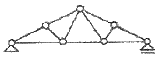
- 왕대공 트러스
- 플레트 트러스
- HOWE 트러스
- 핑크 트러스
(정답률: 알수없음)
22. 전차선 마모의 원인에는 전기적 마모와 기계적 마모가 있는데, 기계적 마모의 특성이라고 볼 수 없는 것은?
- 마찰계수에 비례한다.
- 열차속도에 비례한다.
- 팬터그래프의 접촉 압력에 비례한다.
- 팬터그래프의 습판의 재질에 따라 다르다.
(정답률: 알수없음)
23. 폭 16cm, 높이 18cm 인 직사각형 단면이 있다. 높이를 24cm로 하여 이것과 동일한 단면계수를 갖는 직사각형 단면을 구한다면 폭은 몇 cm로 하여야 하는가?
- 7
- 9
- 12
- 15
(정답률: 알수없음)
24. 가동브래키트를 지지하는 지지용 애자로 사용하는 것은?
- 핀애자
- 내무애자
- 현수애자
- 장간애자
(정답률: 알수없음)
25. 가공 전차선로 도면의 철근콘크리트주에 11-30-N6500으로 표기되어 있다. 6500 의 의미는 무엇인가?
- 길이
- 지름
- 설계 굽힘모멘트
- 압축력
(정답률: 알수없음)
26. 관설이 있는 빔과 완금(트러스빔 및 4각빔을 제외)에서 눈(雪)의 비중을 m, 눈이 쌓이는 바닥 폭(幅)을 b, 관설계수를 f라 하면 관설에 의한 하중 W[kgf/m]를 나타내는 식은?
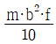
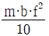
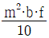
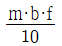
(정답률: 알수없음)
27. 전철용 완철의 시설에 대한 설명으로 틀린 것은?
- 반드시 암타이에만 지지하여야 한다.
- 전주밴드 또는 붙임 철을 사용한다.
- 2단 이상의 경우 암프레스를 사용할 수 있다.
- 필요에 따라 텐숀바에 의하여 지지할 수 있다.
(정답률: 알수없음)
28. 전주를 사용 목적에 따라 구분할 때 트러스식 등의 라멘 구조 개소에 사용하며 곡선로에서 지름 30cm 미만의 전주를 사용하는 경우에는 지선을 취부하는 전주의 형은?
- A형
- B형
- D형
- E형
(정답률: 알수없음)
29. 수직응력과 종변형률의 관계에서 사용되는 영계수(종탄성계수)의 단위인 것은?
- A/cm2
- kg/cm2
- Ω/mm2
- t/cm3
(정답률: 알수없음)
30. 단지선 또는 V형 지선을 상·하 방향으로 2개 시설하는 지선을 말하며, 큰 장력이나 수평장력이 가해지는 헤비심플 커티너리 가선방식의 인류용으로 사용되는 것은?
- 궁형지선
- 수평지선
- 단지선
- 2단지선
(정답률: 알수없음)
31. 응종풍압하중은 전선 기타의 가섭선 주위에 빙설이 부착된 상태에서 수직투영면적 1m2 당 하중을 정하여 적용하는데 이 때 부착된 빙설의 두께와 비중은 각각 얼마인 상태인가?
- 빙설의 두께 : 6mm, 비중 : 0.9
- 빙설의 두께 : 8mm, 비중 : 1.6
- 빙설의 두께 : 10mm, 비중 : 0.9
- 빙설의 두께 : 12mm, 비중 : 1.6
(정답률: 알수없음)
32. 그림과 같이 평행한 힘이 작용할 때 합력의 위치 X는 몇 m 인가?
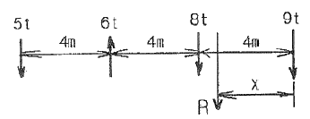
- 2.25m
- 2.75m
- 3.15m
- 3.75m
(정답률: 알수없음)
33. 전철용 전주의 설치위치를 설명한 것 중 틀린 것은?
- 전주의 설치위치는 고속철도의 경우 궤도 외측으로부터 전주 내측까지 2.35m로 한다.
- 승강장에 설치하는 전주는 그 연단으로부터 1.5m 이상 가급적 멀리 이격한다.
- 전주는 차막이의 바로 뒤에 설치하여서는 아니되나 부득이한 경우로서 10m 이상 이격시는 예외로 한다.
- 자동차 등이 통행하는 건널목에 인접한 전주는 건널목 양측단에서 1m 이상 이격하여 설치한다.
(정답률: 알수없음)
34. 전기철도 구조물의 설계에서 일반적으로 단독 지지주로 취급하여 계산하는 지지주가 아닌 것은?
- 가동브래키트 지지주
- 스팬선빔 지지주
- 크로스빔을 지지하는 전주
- V형빔 지지주
(정답률: 알수없음)
35. 가동브래키트의 취부에 대한 설명으로 옳은 것은?
- 가동브래키트는 취부 철물로 완철에 취부한다.
- 일반철도 구간에서 평행개소에는 4본의 브래키트를 평행틀에 설치함을 원칙으로 한다.
- 일반철도 구간의 터널 시단에 설치하는 브래키트는 터널 시점으로부터 5m 이내에 설치함을 원칙으로 한다.
- 고속철도 구간의 평행개소에서 가동브래키트의 취부는 전주대용물에 설치하여야 한다.
(정답률: 알수없음)
36. 가공전차선로에서 급전선에 사용되는 경동선의 안전율은 인장하중에 대하여 얼마 이상이어야 하는가? (단, 케이블인 경우는 제외한다.)
- 2.0
- 2.2
- 2.5
- 3.0
(정답률: 알수없음)
37. 고정식 문형빔 대신에 마주보는 양측 전철주사이에 전산을 가선하고 이것에 전차선을 조가하는 방식의 빔은?
- V형 빔
- 4각 빔
- 스팬선 빔
- 크로스 빔
(정답률: 알수없음)
38. 전차선로용 강 구조물 중 보통 압축재의 세장비(λ)는 얼마 이하로 제한하고 있는가?
- 150
- 200
- 220
- 250
(정답률: 알수없음)
39. 기둥형 전주 기초를 터파기할 때 토양과 기초재의 접촉면에서의 강도 차를 보정하는데 사용하는 계수는?
- 지형계수(k)
- 강도계수(So)
- 형상계수(f)
- 안전율(Fs)
(정답률: 알수없음)
40. 조가선과 전차선의 장력이 각각 1000kgf 이고 경간은 40m, 전차선의 편위는 200mm 일 때 조가선과 전차선의 수평장력은 약 몇 kgf 인가?
- 16
- 18
- 20
- 22
(정답률: 알수없음)
3과목: 전기자기학
41.
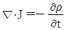
에 대한 설명으로 옳지 않은 것은?- “-”부호는 전류가 폐곡면에서 유출되고 있음을 뜻한다.
- 단위 체적당 전하 밀도의 시간당 증가 비율이다.
- 전류가 정상 전류가 흐르면 폐곡면에 통과하는 전류는 영(ZERO)이다.
- 폐고면에서 수직으로 유출되는 전류밀도는 미소체적인 한점에서 유출되는 단위 체적당 전류가 된다.
(정답률: 알수없음)
42. 전지에 연결된 진공 평행판 콘덴서에서 진공 대신 어떤 유전체로 채웠더니 충전전하가 2배로 되었다면 전기 감수율(susceptibility) χer은 얼마인가?
- 0
- 1
- 2
- 3
(정답률: 알수없음)
43. 점전하에 의한 전위함수가 V=x2+y2[V]로 주어진 전계가 있을 때 이 전계의 전기력선의 방정식은? (단, A는 상수이다.)
- xy = 4
- y = Ax
- y = Ax2
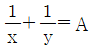
(정답률: 알수없음)
44. 다음 중 폐회로에 유도되는 유도기전력에 관한 설명 중 가장 알맞은 것은?
- 렌쯔의 법칙은 유도기전력의 크기를 결정하는 법칙이다.
- 자계가 일정한 공간 내에서 폐회로가 운동하여도 유도기전력이 유도된다.
- 유도기전력은 권선수의 제곱에 비례한다.
- 전계가 일정한 공간 내에서 폐회로가 운동하여도 유도기전력이 유도된다.
(정답률: 알수없음)
45. 다음 중 전계 E가 보존적인 것과 관계되지 않는 것은?
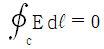
- E = -grad V
- rot E = 0
- div E = 0
(정답률: 알수없음)
46. 내부장치 또는 공간을 물질로 포위시켜 외부 자계의 영향을 차폐시키는 방식을 자기차폐라 한다. 다음 중 자기차폐에 가장 좋은 것은?
- 강자성체 중에서 비투자율이 큰 물질
- 강자성체 중에서 비투자율이 작은 물질
- 비투자율이 1보다 작은 역자성체
- 비투자율에 관계없이 물질의 두께에만 관계되므로 되돌고이면 두꺼운 물질
(정답률: 알수없음)
47. 다음 그림은 콘덴서 내의 변위전류에 대한 설명이다. 이 콘덴서의 전극면적을 S[m2], 전극에 저축된 전하를 q[C], 전극의 표면전하 밀도를 σ[C/m2], 전극사이의 전속밀도를 D[C/m2]라 하면 번위전류밀도 id[A/m2]의 값은?
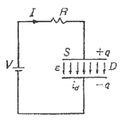
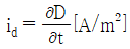
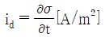
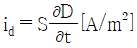
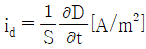
(정답률: 알수없음)
48. 전위함수 V = 5x2y + z[V]일 때 점(2, -2, 2)에서 체적 전하밀도 ρ[C/m3]의 값은? (단, εo는 자유공간의 유전율이다.)
- 5εo
- 10εo
- 20εo
- 25εo
(정답률: 알수없음)
49. 간격 3cm, 면적 30cm2의 평판콘덴서에 220V의 전압을 가하면 양판간에 작용하는 힘은 약 몇 [N] 인가? (단, 유전율 εo=8.855×10-12[F/m] 이다.)
- 6.3×10-6 N
- 7.14×10-7 N
- 8×10-5 N
- 5.75×10-4 N
(정답률: 알수없음)
50. 길이가 1cm, 지름이 5mm인 동선에 1A에 전류를 흘렸을 때 전자가 동선을 흐르는 데 걸린 평균 시간은 대략 얼마인가? (단, 동선에서의 전자의 밀도는 1×1028[개/m3]라고 한다.)
- 3초
- 31초
- 314초
- 3147초
(정답률: 알수없음)
51. 진공중의 점 A에서 출력 50kW의 전자파를 방사하여 이것이 구면파로서 전파할 때 점 A에서 100km 떨어진 점 B에 있어서의 포인팅 벡터값은 약 몇 [W/m2]인가?
- 4×10-7 W/m2
- 4.5×10-7 W/m2
- 5×10-7 W/m2
- 5.5×10-7 W/m2
(정답률: 알수없음)
52. 매질이 완전 유전체인 경우의 전자 파동 방정식을 표시하는 것은?
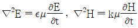
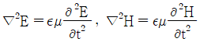
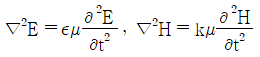
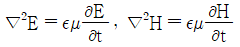
(정답률: 알수없음)
53. 자극의 세기가 8×10-6 Wb, 길이가 3cm인 막대자석을 120 AT/m의 평등자계내에 자력선과 30°의 각도로 놓으면 이 막대자석이 받는 회전력은 몇 N·m 인가?
- 1.44×10-4 N·m
- 1.44×10-5 N·m
- 3.02×10-4 N·m
- 3.02×10-5 N·m
(정답률: 알수없음)
54. 다음 중 무한 솔레노이드에 전류가 흐를 때에 대한 설명으로 가장 알맞은 것은?
- 내부 자계는 위치에 상관없이 일정하다.
- 내부 자계와 외부 자계는 그 값이 같다.
- 외부 자계는 솔레노이드 근처에서 멀어질수록 그 값이 작아진다.
- 내부 자계의 크기는 0 이다.
(정답률: 알수없음)
55. 다음 중 유전체에서 전자분극이 나타나는 이유를 설명한 것으로 가장 알맞은 것은?
- 단결정 매질에서 전자운과 핵읜 상대적인 변위에 의한다.
- 화합물에서 (+)이온과 (-)이온간의 상대적인 변위에 의한다.
- 단결정에서 (+)이온과 (-)이온간의 상대적인 변위에 의한다.
- 영구 전기 쌍극자의 전계 방향의 배열에 의한다.
(정답률: 알수없음)
56. 전자유도법칙과 관계가 가장 먼 것은?
- 노이만의 법칙
- 렌쯔의 법칙
- 패러데이의 법칙
- 앙페르의 오른나서 법칙
(정답률: 알수없음)
57. 유전체내의 전속밀도를 정하는 원천은?
- 유전체의 유전률이다.
- 분극 전하만이다.
- 진전하만이다.
- 진전하와 분극 전하이다.
(정답률: 알수없음)
58. 다음 중 거리 r에 반비례하는 것은?
- 무한장 직선전하에 의한 전계
- 구도체 전하에 의한 전계
- 전기쌍극자에 의한 전계
- 전기쌍극자에 의한 전위
(정답률: 알수없음)
59. 반지름 1cm인 원형코일에 전류 10A가 흐를 때, 코일의 중심에서 코일면에 수직으로 √3cm 떨어진 점의 자계의 세기는 몇 A/m인가?
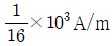
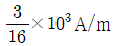
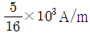
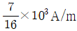
(정답률: 알수없음)
60. 반지름이 3cm인 원형 단면을 가지고 있는 환상 연철심에 코일을 감고 여기에 전류를 흘려서 철심 중의 자계 세기가 400T/m가 되도록 여자할 때, 철심 중의 자속 밀도는 약 몇 Wb/m2인가? (단, 철심의 비투자율은 400 이라고 한다.)
- 0.2 Wb/m2
- 0.8 Wb/m2
- 1.6 Wb/m2
- 2.0 Wb/m2
(정답률: 알수없음)
4과목: 전력공학
61. 다음 중 원자로 냉각재의 구비 조건으로 적절하지 않은 것은?
- 비열이 클 것
- 중성자 흡수가 많을 것
- 열전도도가 클 것
- 유도방사능이 적을 것
(정답률: 알수없음)
62. 동기조상기에 대한 설명 중 옳지 않은 것은?
- 무부하로 운전되는 동기전동기로 역률을 개선한다.
- 전압조정이 연속적이다.
- 중부하시에는 과여자로 운전하여 뒤진 저류를 취한다.
- 진상, 지상 무효전력을 모두 얻을 수 있다.
(정답률: 알수없음)
63. 송전선로에 매설지선을 설치하는 목적으로 알맞은 것은?
- 직격뇌로부터 송전선을 차례보호하기 위하여
- 철탑 기초의 강도를 보강하기 위하여
- 현수애자 1연의 전압 분담을 균일화 하기 위하여
- 철탑으로부터 송전선로로의 역섬락을 방지하기 위하여
(정답률: 알수없음)
64. 전력선에 의한 통신선로의 전자유도장해의 주된 발생요인으로 가장 알맞은 것은?
- 전력선의 연가가 충분하기 때문에
- 전력선의 전압이 통신선로보다 높기 때문에
- 영상전류가 흐르기 때문에
- 전력선과 통신선로 사이의 차폐효과가 충분하기 때문에
(정답률: 알수없음)
65. 송전단전압 161kV, 수전단전압 154kV, 상차각 40°, 리액턴스 45Ω일 때 선로손실을 무시하면 전송전력은 약 몇 MW인가?
- 323 MW
- 443 MW
- 357 MW
- 623 MW
(정답률: 알수없음)
66. 복도체에 있어서 소도체의 반지름을 r[m], 소도체사이의 간격을 5[m]라고 할 때 2개의 소도체를 사용한 복도체의 등가 반지름은?
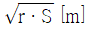
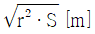
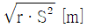
- r · S[m]
(정답률: 알수없음)
67. 66kV, 60Hz 3상1회선 송전선이 통신선과 나란히 가선되어 있다. 송전선의 1선지락사고로 영상전류가 80A 흐를 때 통신선에 유기되는 전자 유도 전압은 약 몇 [V] 인가? (단, 영상전류는 전 전선에 걸쳐 같은 크기이고 상호인턱턴스는 0.⑤mH/km 이며, 송전선과 통신선의 병행길이는 40km 이다.)
- 75 V
- 136 V
- 150 V
- 181 V
(정답률: 알수없음)
68. 한류리액터를 사용하는 가장 큰 목적은?
- 충전전류의 제한
- 접지전류의 제한
- 누설전류의 제한
- 단락전류의 제한
(정답률: 알수없음)
69. 어느 수차의 정격회전수가 450rpm 이고 유효낙차가 220m 일 때 출력은 6000kW 이었다. 이 수차의 특유속도는 약 몇 [m·kW] 인가?
- 35 m·kW
- 38 m·kW
- 41 m·kW
- 47 m·kW
(정답률: 알수없음)
70. 20kV 미만의 옥내 변류기로 주로 사용되는 것은?
- 유입식 권선형
- 부싱형
- 관통형
- 건식 권선형
(정답률: 알수없음)
71. 어느 발전소에서 40000 kWh를 발전하는데 발열량 5000kcal/kg의 석탄을 20톤 사용하였다. 이 화력발전소의 열효율은 약 몇 [%] 인가?
- 27.5%
- 30.4%
- 34.4%
- 38.5%
(정답률: 알수없음)
72. 22.9kV 가공배전선로에서 주 공급선로의 정전사고의 정전사고 시 예비전원 선로로 자동 전환되는 개폐장치는?
- 고장구간 자동 개폐기
- 자동선로 구분 개폐기
- 자동부하 전환 개폐기
- 기중부하 개폐기
(정답률: 알수없음)
73. 다음 중 무부하시 충전전류 차단만이 가능한 기기는?
- 진공차단기
- 유입차단기
- 단로기
- 자기차단기
(정답률: 알수없음)
74. 송전전력, 선간전압, 부하역률, 전력손실 및 송전거리르 동일하게 하였을 경우 단상 2선식에 대한 3상 3선식의 총 전선량(중량)비는 얼마인가?
- 0.75
- 0.94
- 1.15
- 1.33
(정답률: 알수없음)
75. 66kV 3상 1회선 송전선로에서 1선의 리액턴스가 22Ω, 전류가 300A 일 때 %리액턴스는?
- 10√2
- 10√3
- 10 / √2
- 10 / √3
(정답률: 알수없음)
76. 다음 중 코로나 임계전압에 직접 관계가 없는 것은?
- 전선의 굵기
- 기상조건
- 애자의 강도
- 선간거리
(정답률: 알수없음)
77. 다음 중 송전계통에서 안정도 증진과 관계 없는 것은?
- 리액턴스 감소
- 재폐로방식의 채용
- 속응여자방식의 채용
- 차폐선의 채용
(정답률: 알수없음)
78. 직류송전방식이 교류송전방식에 비하여 유리한 점을 설명한 것으로 옳지 않은 것은?
- 표피효과에 의한 송전손실이 없다.
- 통신선에 대한 유도잡음이 적다.
- 선로의 절연이 쉽다.
- 정류가 필요 없고 승압 및 강압이 쉽다.
(정답률: 알수없음)
79. 배전선로에서 수용가에의 공급 전압을 허용 범위 내에 유지하기 위해서 적용하는 방법이 아닌 것은?
- 배전변압기에서의 전압조정에는 고압선 각부의 전압에 따라서 배전변압기의 사용 탭을 적정하게 선정한다.
- 66kV 이하의 변전소에서의 전압조정에는 모선 또는 급전선 마다 정지형 전압 조정기를 설치해서 조정한다.
- 우리나라에서는 배전선로에서의 전압강하 한도를 10%로 잡고 적정한 전압강하 값을 설비별로 분담하는 방법으로 전압 조정용 기기와 병용해서 사용한다.
- 배전선로의 부하는 중부하시와 경부하시에 크게 변화하므로 변선소 수전측의 송전선로에 대해서는 소호리액터를 사용해서 조정한다.
(정답률: 알수없음)
80. 저압뱅킹 배전방식에서 캐스케이딩현상을 방지하기 위하여 인접 변압기를 연락하는 저압선의 중간에 설치하는 것으로 알맞은 것은?
- 구분퓨즈
- 리클로우저
- 섹셔널라이져
- 구분개폐기
(정답률: 알수없음)